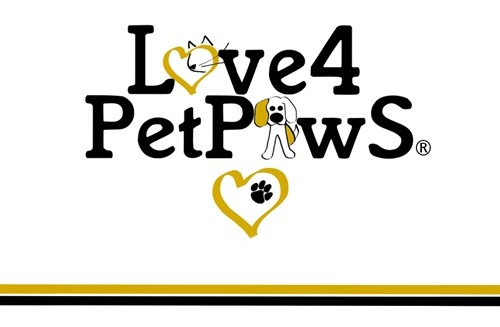

|  |
Heather KelrossCo-Owner Love4PetPaws.com LLC I am Mom to 4 fur babies. Sophie, Molly, Ollie, and Kinsey. I like to travel and will be happy when Covid-19 is under control and it is safer to do so again. I also enjoy spring and growing new plants. |
| Dates | Name |
|---|---|
| 1990-2003 | Amber |
| 2001-2012 | Thor |
| 2002-2016 | Chloe |
| 2004-2011 | Gracie |
| 2004-2014 | Barney |
| Pet Name | Nicknames | Emoji |
|---|---|---|
| Gracie | Gracie Buttins | 💟🌅 |
| Amber | Baby Girl | 💖💯 |
| Thor | Tudatu | 🐺🐾 |
| Barney | Barneybooboobeezer | 🐶🦴 |
| Chloe | Chloooobutt | 😻💝 |
| em=emphasize | a href=refer to | |
| br=spacing. | hr=horizontal line. |